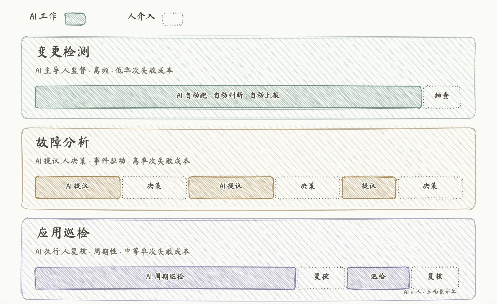
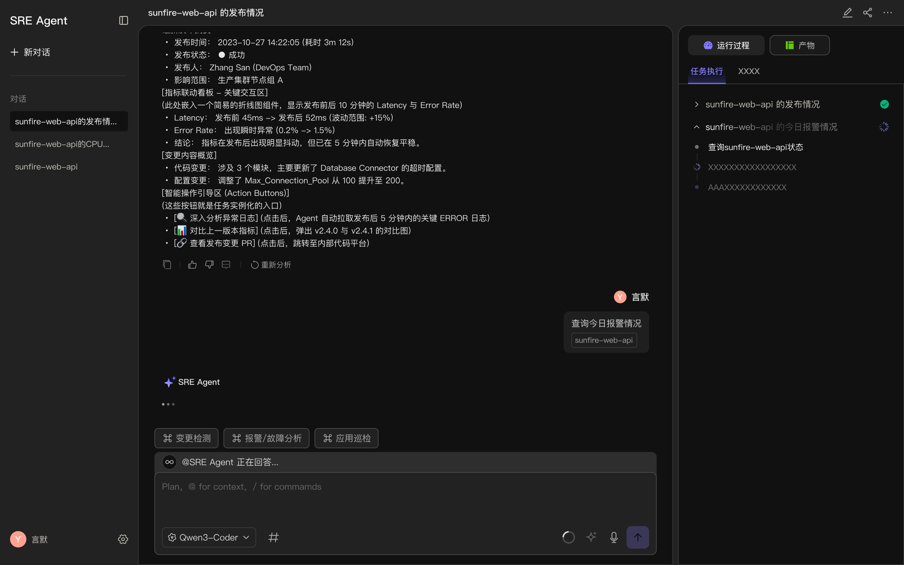
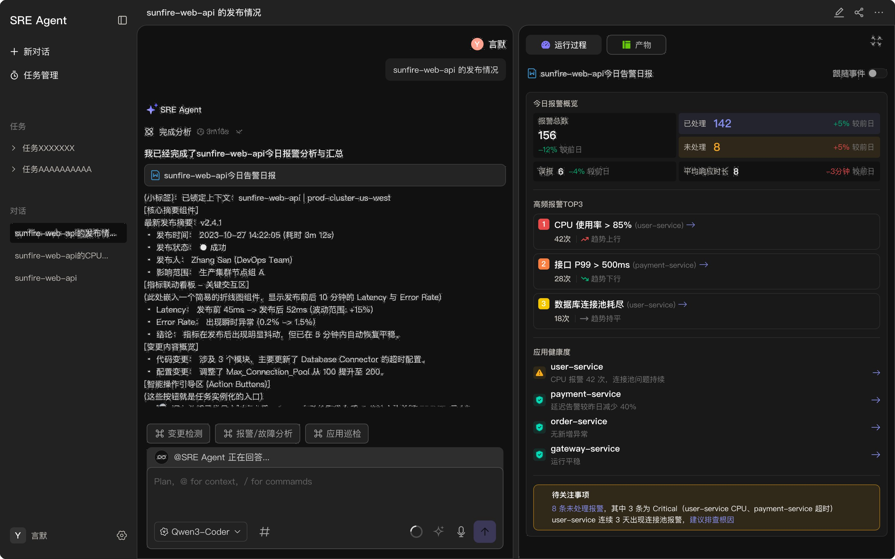

助手
SRE Agent 是一个 AI Native 产品，基于第三方可观测数据，通过对话形式支持变更检测、故障分析、应用巡检三个核心场景。
我从 2026 年起担任 Design Owner，负责产品的核心设计。基础版开发中。本页文档化目前已完成的核心判断，以及在持续探索的设计方向。
三个场景
协作边界的差异
SRE Agent 覆盖的三个场景，表面上都是"AI + 运维"，但 AI 和用户的协作边界完全不同。同一套交互模式套用到三个场景，会同时出现两类错误：高风险场景下过度自动化、低风险场景下过度等待用户。所以协作边界必须按场景分别定义。
判断的依据来自三个维度的差异——触发频率、单次失败成本、人介入的时机。这三个维度共同决定了 AI 应该承担多少、人应该接管哪里。

变更检测 · AI 主导，人监督
变更检测是高频任务——每一次代码发布、配置变更、依赖升级都会触发。单次判断的失败成本很低（误报一条变更，用户忽略即可），但要求覆盖率必须高（漏掉一个引起故障的变更，损失立刻放大）。所以这个场景下 AI 必须是主导方：让 AI 自动跑、自动判断、自动上报异常变更。人不需要参与每一次判断，只需要在 AI 上报异常时复查——把人力从"每条变更都看一眼"中释放出来。
关键设计动作是异常上报机制：AI 判定为异常的变更如何呈现、如何分级、如何让用户在不打开 SRE Agent 主界面的情况下也能感知到。
故障分析 · AI 提议，人决策
故障场景的单次错误成本极高。AI 误判可能让用户走错排查路径、延长 MTTR，甚至影响业务连续性的判断。这个场景下 AI 的角色必须是"提议者"而不是"决策者"——给出判断和行动建议，但执行权完全在用户手里。每一步用户都能否决、修正、要求 AI 重新分析。
关键设计动作是结论与证据的分层：紧急时让用户先看到结论和行动路径，需要质疑时能立即调取证据链。这个判断在「03 结论优先」一节里展开。
应用巡检 · AI 执行，人复核
应用巡检是周期性任务——按既定规则定时检查应用状态、配置合规性、容量水位。单次失败成本介于前两者之间：错过一次问题不会立刻爆发，但累积起来会变成隐患。这个场景下 AI 全权执行，定期生成巡检报告。人不在每次巡检的过程中介入，而是在报告产出后做抽样复核——验证 AI 的判断标准在当前业务环境下仍然成立。除定期巡检外，用户也可以主动发起查询，按需拉取指定资产的当前状态与近期报警汇总。
关键设计动作是报告结构与抽样路径：报告本身要能让用户快速识别异常项，同时支持用户对正常项进行抽查（避免 AI 形成"全部正常"的惯性偏差）。
协作边界的本质
把同一套 AI 能力按场景拆分协作边界，本质上是对"AI 在什么情况下可信、在什么情况下不可越权"的回答。这个边界一旦定义清楚，后续的界面状态、介入节点、错误处理才有依据——它们不是独立的设计决策，而是协作边界判断的下游产物。
协作边界也定义了失效时的退化方向：AI 超时或数据缺失时，三个场景的降级并不相同——变更检测退回"本轮无结论、不阻断用户"，故障分析退回"只呈现已获取的证据、不给不可靠结论"，应用巡检则标注"本次巡检数据不完整"并保留人工复核入口。让 AI 的"不确定"和"失败"显性化，本身就是协作设计的一部分——这一原则在《AIOps 产品演进中，体验设计能做什么》里展开。
已落地 · 应用巡检的主动查询
三个场景中，用户主动查询这条支线率先落地。用户以对话形式指定资产、拉取报告，AI 完成分析后产出结构化汇总；定期自动巡检的能力仍在建设中。


结论优先
证据按需调取
故障分析场景里 AI 是"提议者"——但提议要怎么呈现，是这个协作模式的具体形态问题。
核心判断：故障场景下结论与行动路径优先，证据按需调取。
这个判断对应了故障场景的两个约束：单次失败成本高（用户必须能快速否决或采纳 AI 的提议），紧急程度高（用户首先想的是如何快速止损，而不是评估证据）。
做这个判断之前对比过 Dynatrace Davis 和 Datadog Bits AI——Datadog 把证据放在与结论同等重要的位置，可以直接切换查看；Dynatrace 倾向于先给结论。两种路径对应的是对"AI 提议如何被用户消化"的不同假设：Datadog 假设用户在判断时要同时看证据，Dynatrace 假设用户先接收判断、再按需追溯。
结合 Sunfire 的真实使用场景——故障发生时，用户首先想的是如何快速解决问题、避免影响扩大，而不是逐项核对证据。最终选择更接近 Dynatrace 的方式：结论 + 行动建议优先，证据以链接形式按需调取（点击跳转 trace 详情）。
进行中的方向
三个场景里，应用巡检的主动查询已落地基础版。故障分析的"结论优先"、变更检测的异常上报机制、应用巡检的定期自动执行，以及贯穿三场景的置信度视觉语言，都在持续探索/建设中。
这些方向背后的设计原则在《AIOps 产品演进中，体验设计能做什么》一文里展开。